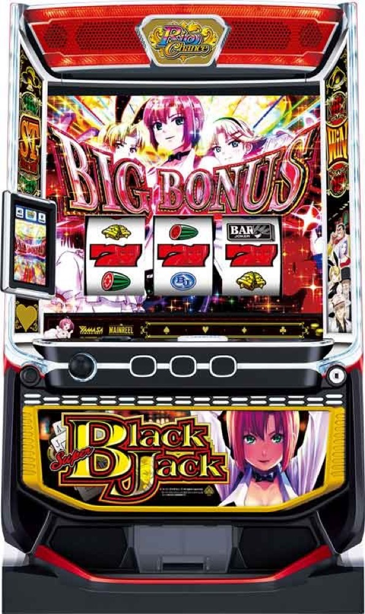

L スーパーブラックジャック
初当りBIGからリオチャンス高確へ。6G＋αの昇格PUSH、BONUS、ST、SSTをつなぐSBJループ。
- 導入
- 2025年2月
- メーカー
- 山佐ネクスト
- 分類
- パチスロ
主要スペック
初当り3種類、リオチャンス高確、6G＋αの昇格パート、狙えまで続くジャッジ、6種類の報酬BONUS、50〜777Gのストックタイム、100G以上のスーパーストックタイムまでを専用画面で体験できます。
- 初当りはREG60枚・赤BIG100枚・青BIG300枚
- リオチャンスは6G＋α＋狙えまでの2部構成
- STは純増約0.4枚/G・平均RC約2個
- SSTは純増約5.1枚/G・平均RC約5個
L スーパーブラックジャックの見どころと計算条件
初当り3種類、リオチャンス高確、6G＋αの昇格パート、狙えまで続くジャッジ、6種類の報酬BONUS、50〜777Gのストックタイム、100G以上のスーパーストックタイムまでを専用画面で体験できます。
スーパーブラックジャックを数字で早分かり
初当りBONUS、リオチャンス昇格、6種類の報酬、STのRCストック、SSTを機種専用で記録します。
30秒で分かるスーパーブラックジャック
初当りBIGからリオチャンス高確へ入り、昇格型RCとBONUS、STのストック放出を往復するループ型です。
こんな遊び方に向いている
- RCの6G昇格と狙えPUSHを体験したい
- BONUS種類ごとの枚数とST期待度を比べたい
- SSTでRCストックをまとめて獲得したい
遊ぶ前に確認したいこと
- 初当り振り分け、BONUS枚数、主要ゲーム数、純増は公開値
- STとSSTのゲーム数・平均ストック差を反映
- RC初期配列など未公表部分は体験用代表値
初当り3種類とリオチャンス高確
初当り振り分けはREG45.7%、赤7BIG49.4%、青7BIG4.9%。純増は約5.1枚/Gで、REGは60枚、赤7BIGは100枚、青7BIGは300枚です。
BIG後はリオチャンス高確へ。REG後は通常へ戻り、通常ゲーム数を引き継ぎます。専用画面では初当り種類をPUSHで開き、BIG時だけリオチャンス高確へ進みます。
6G＋αのリオチャンス
リオチャンスは前半の昇格パートと後半のジャッジパートで構成。前半は6G＋α、毎ゲームの昇格期待度は約1/2です。レア役で超昇格へ入ると減算が止まり、2段階昇格のチャンスになります。
後半は約1/3で発生する狙えカットインまで継続し、狙えが来なければ報酬が必ず昇格。PUSHでREG、赤BIG、青BIG、SUPER BIG、EPISODE、SSTのいずれかを開きます。
RC経由BONUSとST抽選
RC経由の報酬はREG60枚、赤7BIG200枚、青7BIG300枚、SUPER BIG400枚、EPISODE BONUS400枚、SP EPISODE BONUS200枚または500枚。BONUSは純増約5.1枚/Gです。
青7BIGはST期待度約30%、SUPER BIGは約50%、EPISODE BONUSはST濃厚。BONUS後にSTへ入らなかった場合もRC高確へ戻り、SBJループの再当選を狙います。
STOCK TIME
STOCK TIMEは純増約0.4枚/G、50〜777G継続するRCストック高確。平均RCストックは約2個で、リプレイ・レア役・リーチ目から最大7個まで獲得する可能性があります。
100G以上の選択率は約10.2%。ストックは50Gまたは100Gの区切りで放出され、RC→BONUS→残りSTへ復帰する流れを専用履歴で表示します。
SUPER STOCK TIMEとジョーカーモード
SSTは設定1で約1/6518.3、100G以上・純増約5.1枚/G・平均RCストック約5個。200G以上の選択率は約14%です。
REGが続いた先の金BARからSP EPISODE BONUSを獲得するとジョーカーモードへ。シミュレーターではSSTを上位ルートとして進行し、ジョーカーモードは記事内で仕組みを解説します。
固定条件と簡略化する範囲
- 約31.4G/50枚・1,000円46枚貸し・5.2枚交換で固定
- 設定1〜6のBONUS初当り・RC高確は公開設定別値を使用
- 初当り、RC昇格、報酬BONUS、ST、SSTを機種専用進行
- 初当り3種類の振り分けとBONUS枚数は公開値
- RC初期配列・未公表の細かな昇格率や再高確率は体験用代表値
平均Gと投資目安の計算
掲載するリオチャンス初当り約1/417.6は設定1基準です。当サイトでは50枚あたり31.4G、1,000円46枚貸しの固定条件から、設定1基準の平均投資目安を約14,500円と計算します。
シミュレーターでは設定1〜6を均等抽選します。設定1〜6で公開されている初当り値を個別に使います。公開されていない特化ゾーン・上位到達率の設定差は加えません。 換金は5.2枚交換で固定し、結果とランキングに設定を表示します。
シミュレーション結果の見方
当るまでBONUS初当り・リオチャンスまでのゲーム数
設定設定1・2・3・4・5・6から抽選された今回の設定
上位到達RC報酬昇格とSUPER STOCK TIMEへの到達
最終収支差枚と5.2枚交換の収支目安
結果は自動で「マイ記録」に保存され、同じ機種を何回試したか、最高収支、勝率をあとから確認できます。
簡易シミュレーターについて
BONUS初当り・リオチャンス・SUPER STOCK TIMEの流れを固定条件で体験できます。JavaScriptを有効にすると、この位置にシミュレーター、演出、マイ記録、機種別ランキングが表示されます。
結果は娯楽・確率理解のための参考表示です。金銭的価値や交換価値はなく、実際の勝敗や収支を保証しません。18歳未満の方の利用はお控えください。
スーパーブラックジャックのよくある質問
スーパーブラックジャックはどんな台？
初当り3種類、リオチャンス高確、6G＋αの昇格パート、狙えまで続くジャッジ、6種類の報酬BONUS、50〜777Gのストックタイム、100G以上のスーパーストックタイムまでを専用画面で体験できます。 初当りはREG60枚・赤BIG100枚・青BIG300枚が主な確認ポイントです。
スーパーブラックジャックの平均投資目安は？
設定1基準のリオチャンス初当り約1/417.6と、50枚あたり31.4G・46枚貸しの固定条件から、平均14,500円を目安として表示します。実際の設定や遊技状況で結果は変わります。
設定とゲームの流れはどう抽選する？
開始時に設定1・2・3・4・5・6から1つを均等抽選し、BONUS初当り、リオチャンス、RC報酬昇格、SUPER STOCK TIMEの順で到達を判定します。設定は最終結果とランキングに表示します。
収支はどう計算する？
1,000円46枚貸し・5.2枚交換の固定条件で投資、換金、収支目安を計算します。実店舗の再プレイ、持ちメダル、端数処理は含みません。